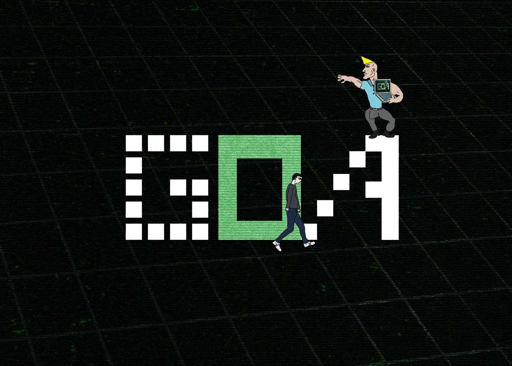
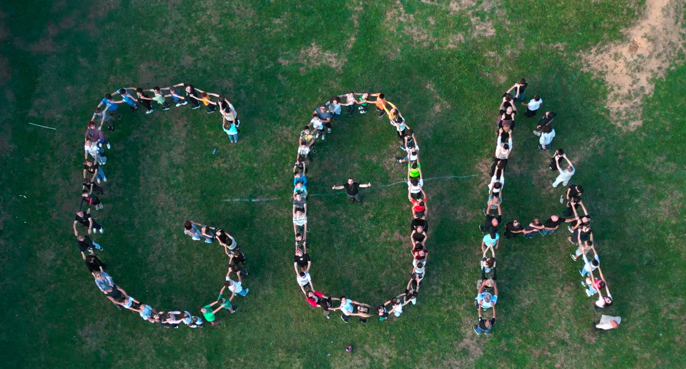
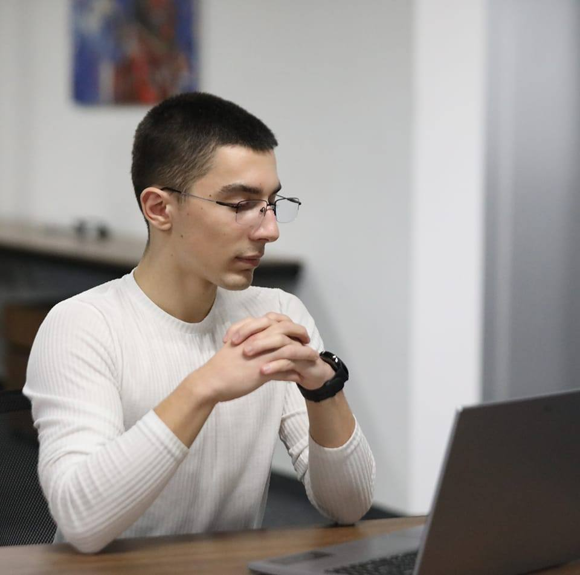
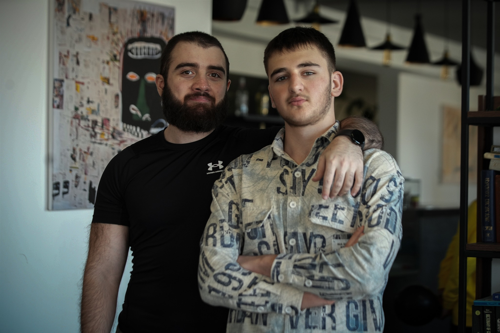

About GOA
GOA is a place where you can learn how to programming

The only and most reliable academy in Georgia, which helps you personally, humanly and helps you to solve life problems to the end
GOA was created April 13, 2022
this place is very friendly and comfy



Nika Keshelava is an Owner and CEO at GOA

IN this school there are many children who wants to learn so Nika Keshelava does everything for his student
Also in this school are very clever mentors ; Luka Tshkvaradze,Gabriel Molodini, Davit Janezashvili and etec.
Luka Tshkvaradze - one of the best mentor ever

Gabriel Molodini

Davit Janezashvili

if you want to join us i will tell you the pages where you can contact whith us :